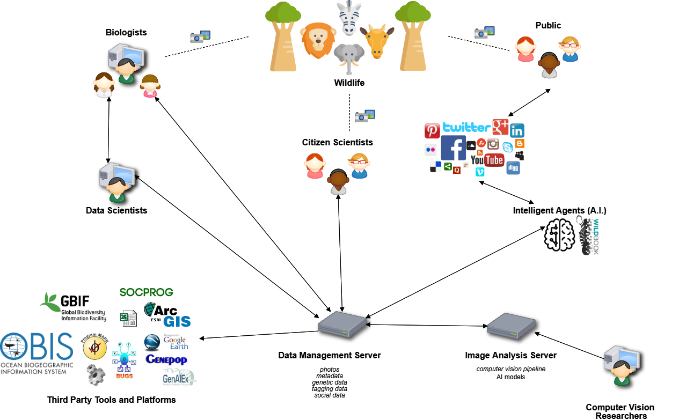

Introduction to Wildbook#
Wildbook is a web-based, multi-user software platform to help researchers collaboratively track individual animals in wildlife populations and estimate population sizes. Each Wildbook installation can be used by multiple researchers for multiple species.
This introduction covers the most common interactions within Wildbook platforms. It is intended to support Wildbook users and researchers collecting data in the field and to illustrate how to use Wildbook for data storage, curation, searching, and analysis.
Included Wildbook features:
A browser-based user interface (UI)
A high performance PostgreSQL database for storing multiple wildlife-related data types
Two servers:
Data Management Server - Coordinates UI browser display and data storage
Wildbook Image Analysis (“WBIA”) - Manages the computer vision pipeline and and artificial intelligence (AI) models and training tools. WBIA does not come pre-configured to detect and/or identify animals from a species. Pre-trained machine learning (ML) models for the species must be used, or new models must be created and configured using training data.
Artificial intelligence (AI) tools to enhance image curation by:
Finding one or more animals in a photo or photos (“Detection”)
Individually identifying each animal detected (“Identification”)

The Wildbook ecosystem of people, servers, and AI.
Wildbook Terminologies#
Wildbook#
In its simplest usage, Wildbook receives a wildlife picture and its related metadata (e.g. where the photo was taken and when), which gets uploaded by a researcher. The following terminology is used by Wildbook programs as users curate their wildlife data. To facilitate a better understanding of these terms, we will work through the process Wildbook and users take to upload and manage their wildlife data. Let’s use the picture below as an example:
MediaAsset & Annotation#
When the system runs that image through a machine learning (ML) stage called “Detection”, it generates an Annotation for each animal found in the picture. Because this photo contains two African wild dogs, it would be returned with two Annotations, as shown in the bounding boxes below.
Encounter#
An Encounter represents an interaction with a single animal. If you interacted with five members of a pack at a specific place and time, your result would have five Encounters. Encounters are the foundational components of Wildbooks software. They provide a reference to a time and location where an animal was spotted, forming the basis of whether that animal ultimately should or should not be included in a population analysis. In the photo above, Wildbook’s ML process detected two Annotations of African wild dogs, and thus two Encounters would be generated from the one MediaAsset. Wildbook creates web pages for each Encounter for referencing. Because more than one animal appears at the same time in this example MediaAsset, we want to ensure that the relationship between these two Encounters is well understood (i.e. These two animals were sighted together.).
Sighting#
Therefore, Wildbook creates a Sighting, representing a broader observation of one or more animals. A Sighting allows researchers to include information about social relationships and observed behaviors when multiple animals are sighted together. Unlike Encounters, Sightings are one-to-many; if you interact with five members of a pack, you have one Sighting that is made up of five Encounters, one for each animal. Like Encounters, Wildbook also creates web pages for each Sighting.
Individual#
An Individual is a single animal that has been given an identifying name/Annotation within the Wildbook platform and has one or more Encounters. Individuals are animals whose identities and metadata (eg. tags, keywords, social information) have been confirmed by a researcher.
Account Management#
Wildbook supports security functions that support real world research collaborations and organizations.
Login#
A user is able to log in by selecting the Login button at the top right of the Wildbook program or by selecting any page that requires a user to sign in to access content. A username and password are required. To set up a Wildbook account, you will need to contact the site managers via the Contact Us page. Wildbook does not currently support self-registration.
Account Management#
Under the Administer menu, you have the following options:
My Account provides a collection of information about the signed-in user, including password reset and profile picture management, a list of accepted collaborations, and statistics about the data associated with the account.
For information about your user accounts and security, see My Account.